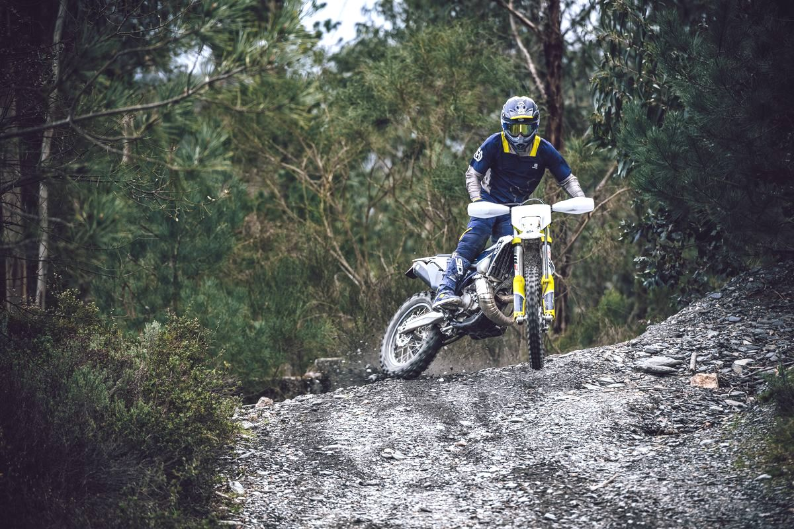

Az enduro, a motorsport egyik formája, amelynek pályája kizárólag "off-road" vagyis terep. Enduroban különböző mesterséges illetve természetes akadályt kell leküzdeni a cél eléréséhez. Az amatőr és profi enduro versenyek egyik legismertebb kategóriája a sprint melyben adott idő alatt kell beérni a célba.
Ezeknek a versenyeknek nyitott pályájuk van, de megvan határozva egy útvonal amelyen haladni kell.
A pálya több szakaszra van felbontva. Egyes részeken lehetőség van a motor gyors szervizelésére illetve tankolására. A verseny során több ellenőrző pont található, ahol megmérik mennyi idő alatt teljesítetted az adott szakaszt. Aki a legjobb időt futja a versenyen, az nyer. Kizáráshoz vezethet ha a pálya utvonalától eltérve, máshonnan közelítjük meg az ellenörző pontokat.
VERSENYEK
Legismertebb versenyek:
Enduro Világbajnokság (World Enduro Championship
Nemzetközi Hatnapos Enduro (ISDE International Six Days Enduro)
Redbull Romaniacs
Erzberg Hare Scramble
